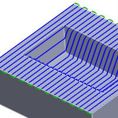
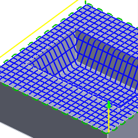

<div id="perpendicularPasses"><p>この設定は、指定されている加工方向に対して直角にパスを追加する事で、加工カスプを削減します。</p>
<table class="tipTable" cellspacing="10">
<tr>
<td><center></center></td>
<td><center></center></td>
</tr><tr>
<td><center><p><b>無効</b></p></center></td>
<td><center><p><b>有効</b></p></center></td>
</tr></table>
</div>